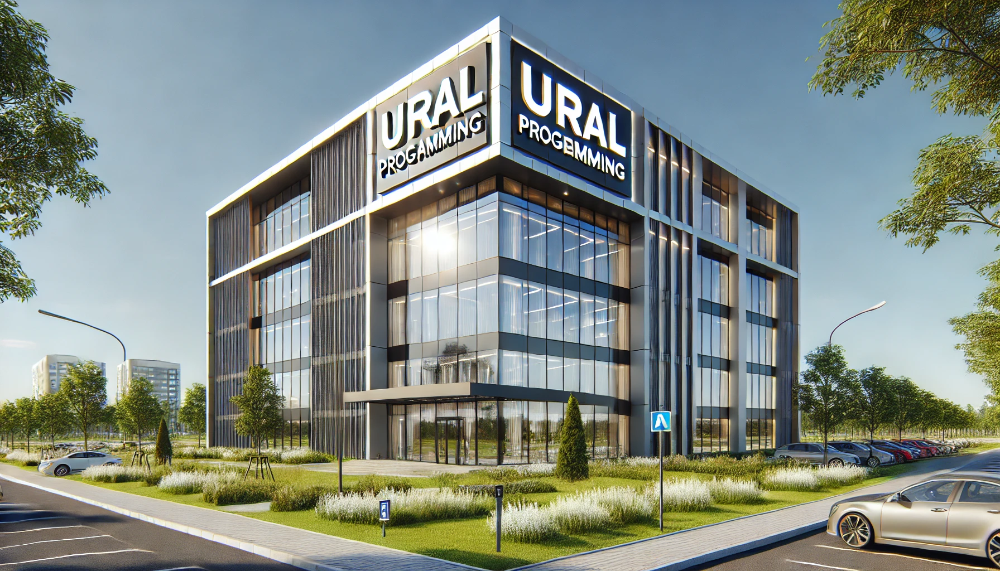

Ural Programming olarak, yazılım dünyasında yenilikçi çözümler sunan bir ekip olarak yanınızdayız.
Teknolojiyi işinize uyarlamanıza yardımcı oluyor, daha verimli ve etkili bir gelecek inşa etmeniz için çalışıyoruz.
Ural Programming, 2020 yılında kurulmuş olup, yazılım ve teknoloji alanında hizmet vermektedir. Müşterilerimize en iyi hizmeti sunmak için çalışıyoruz. Uzun yıllar boyunca edindiğimiz deneyim ve bilgi birikimi sayesinde, sektörde lider konumda yer alıyoruz.
Şirketimizin tarihçesi ve önemli kilometre taşları:
Şirketimizin temel değerleri, müşteri memnuniyetini ve kaliteli hizmet sunmayı hedefler:
Ural Programming olarak, sektördeki başarılarımızı kutlamaktan gurur duyuyoruz: